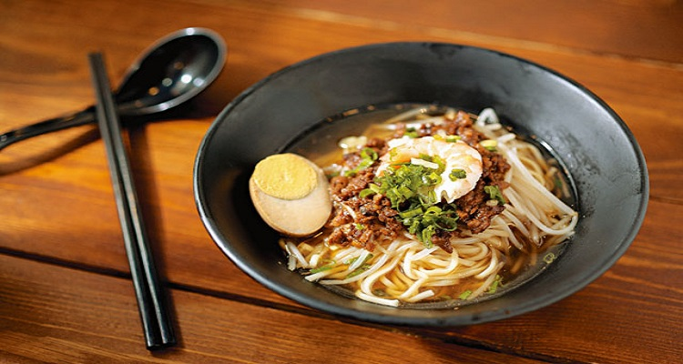
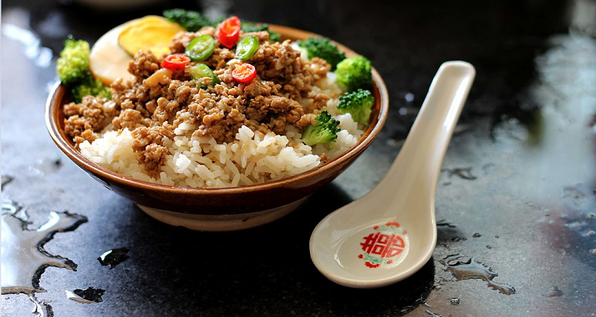

当地美食
#担仔面#
担仔面系由小贩挑担沿街叫卖的面食，在台湾最早的起源在台南沿海地区，渔家在无法出海补鱼的季节里，挑起面担外出作生意贴补家用，故有度小月之称。担仔面是行业的统称，面摊上所贩卖的面食则称为切仔面或拉仔面，取其将面条放入滚水中「切」一下或「拉」一下的动作（闽南语发音）。

图：担仔面
#卤肉饭#
在台湾光复初期，物资缺乏，「肉」是饭桌上的奢侈品，只有逢年过节才能吃到。当时，猪颈肉到猪耳朵的部位比较便宜，因此民众偶尔会买这些部位的猪肉，配上酱油、红葱头及五香粉来卤制。
此外，由于这部位的猪肉份量不多且难以均分，因此便切成肉丝及肉丁再加以卤制，如此一来，全家人便可以「均分」并享用到美味的卤肉。一锅热腾腾、香喷喷的卤肉及卤汁，淋在香Q弹牙的米饭上，可以说是当时一般民众最顶级的享受！

图：卤肉饭
#肉羹#
羹类菜肴常见于中国各大菜系，台湾较特别的做法是用上好的鱼浆包裹肉加入羹汤中，此外，为增加饱足感，也常加入米粉、面、冬粉、饭等主食。除了肉羹外，花枝羹、鱿鱼羹、鸭肉羹也很常见。

图：肉羹
#筒仔米糕#
相传在苏东坡的《仇池笔记》中，就已经有筒仔米糕的记载，当时的名称为「盘游饭」。筒仔米糕口味与油饭类似，但是烹调的器具不同。筒仔米糕是将糯米、虾米、葱酥、后腿肉等食材放入小筒内蒸熟，要食用时再倒扣于盘上，淋上甜辣酱及香菜即可。筒仔米糕在早期农业时代是以竹筒当成盛具，但后来多以小铁筒为主。
#小笼包#
小笼包起源于中国上海南翔的著名点心，称为「南翔小笼馒头」。传统小笼包的馅料主要为猪腿肉，台湾的小笼包则加入当令食材，例如：丝瓜、瓠仔，在鲜甜的肉汁味中别有一番清爽的口感。
图：小笼包
#麻糬#
麻糬在早期台湾社会称作「豆糬」，后来因为日本殖民时期受到和菓子等日式点心的影响，人们便将「豆糬」改称为「麻糬」。麻糬是台湾原住民与客家文化具代表性的佳肴之一。
图：麻薯
#蚵仔煎#
蚵仔煎绝对是台湾最有名的小吃之一了，你几乎只能在台湾才能品尝到它。蚵仔煎是以肥美多汁的鲜蚵（蚵仔为闽南语，其实就是牡蛎）加上鸡蛋、茼蒿菜，再勾芡太白粉煎成饼状。上桌前淋上甜辣酱料，你就可以尝到蚵仔的鲜美，以及饼皮的香甜滋味了。
图：蛤仔煎
#猪血糕#
猪血糕是台湾最独特的小吃之一，口感比一般的糯米糕还硬一些。小吃摊上贩卖的猪血糕中，最常见的花生猪血糕，是将蒸好的条状猪血糕沾上酱油后，依照顾客的需求只加甜辣酱或辣酱，或是再加上厚重的花生粉及少量香菜，之后插上竹签，直接拿在手上食用，非常特别。
图：猪血糕
#大肠包小肠#
大肠包小肠是台湾岛的独创美食，也被誉为“台湾国民小吃”！。其实他的外观和热狗有几分相似，不过要将包裹着猪肉肠的面包换成糯米。简单来说，就是将体积较大的糯米肠切开后，再夹住体积较小的台式香肠。
炭火烧烤的大肠外皮微酥，内馅米粒饱满，夹上风味绝佳的香肠，铺上酸菜、小黄瓜、姜片与菜脯蛋等小菜，还有原味、辣味、黑胡椒味等可以选择。一口咬下肉汁四溢，满嘴的美味。
图：大肠包小肠
觅食好去处
#西门町商圈#
西门町的地名来自日治时代，当时的居民大多居住于台北城内，而西门区域就是他们的休憩场所，1896年，这里有了第一家戏院「东京亭」，1922年时，正式以「西门町」为名。
电话：02-2720-8889
地址：台北市万华区中华路一段
大众运输：
搭高铁至台北站下-转搭台北捷运至西门站下。
搭台铁至台北站下-转搭台北捷运至西门站下。
搭台北市双层观光巴士至捷运西门站下。
图：西门町
#饶河街观光夜市#
饶河街夜市位于松山区八德路四段及抚远街间的饶河街，是台北市区的大型观光夜市之一。饶河街夜市全长约六百公尺，位于抚远街与松山火车前的入口处，各设有一座灯火璀璨的牌楼，由牌楼处开始进入夜市区。
饶河街夜市之一大特色。两侧商店及楼下的摊贩不计其数，摊位整齐，内容琳琅满目，蚵仔面线、牛杂面、冰品摊等应有尽有，除了小吃外，各种日用百货如服饰、皮鞋亦物美价廉，此外还有民俗技艺表演及土产展售等。因此来到此地的人，无论采买服饰、生活用品或吃喝玩乐，绝对能尽其所欲。
电话：（02）2763-5733
地址：台北市松山区饶河街
大众运输：搭台铁至松山站下。
图：饶河街观光夜市
#士林夜市#
士林夜市为台北市最具规模的夜市之一，以阳明戏院及慈诚宫为中心，包含了文林路、大东路、大南路等热闹街市。由于夜市邻近许多学区，故以学生为主要的消费族群，价格也比一般商店便宜许多，例如家具、衣饰、相片冲印店或宠物用品等，都有其集散的区域，许多观光客皆慕名而来。
电话：02-2882-0340
地址：台北市士林区大东路、大南路、文林路、基河路
大众运输：
搭高铁或台铁至台北站下-转搭台北捷运至剑潭站下。
搭台北市双层观光巴士至捷运剑潭站下。
图：士林夜市
#华西街夜市#
华西街夜市位于龙山寺附近，是台北第一座观光夜市，以贩卖各式山产海鲜野味小吃为大宗，是国内外观光客最钟爱的景点之一。夜市入口处为中国传统牌楼建筑，沿途挂满红色宫灯，极具特色，两旁店家皆为老字号，口碑与质量兼顾，连高级餐厅也有据点。
电话：02-2388-1818
地址：台北市万华区华西街
大众运输：
1.搭高铁至台北站下-转搭台北捷运至龙山寺站下。
2.搭台铁至万华站下。
图：华西街夜市
#迪化街-年货大街#
一向以办年货闻名全台、一般所熟知的迪化街，其实指的台北大桥以南的迪化街一段。光复后迪化街持续作南北货、中药和布匹批发商集中地，至今仍是这三大行业中最大的批发零售市场，是台北市现存最完整也最具历史意义的老街。
迪化街不但是大稻埕最早的市街，而且从清末至今，都是大稻埕商圈的核心，一直保持旧日的风貌和活跃的商业活动。
电话：02-2720-8889
地址：台北市大同区迪化街一段
大众运输：搭高铁或台铁至台北站下-转搭台北捷运至双连站下。
图：迪化街
#信义商圈#
信义计划区为新兴商业区，乃目前台北市最具指标性的商圈，其中信义路4、5段间就有多家百货公司、饭店、时尚餐厅，号称台北最具价值的地区，包含新光三越信义店、新光三越新天地、A4、新舞台、威秀影城、凯悦饭店等，加上台北101，这里已渐渐取代东区成为新的时髦都会地区。
电话：02-2720-8889
位置：台北市信义区
大众运输：
搭高铁或台铁至台北站下-转搭台北捷运至市政府站下。
搭台北市双层观光巴士至松寿路口下。
图：信义商圈
米其林餐厅
#L’ATELIER de Joël Robuchon#
被誉为「二十世纪第一名厨」的 Joël Robuchon，带着28颗米其林星星的精湛厨艺从巴黎来到台湾，献给喜爱法式料理的饕客们。位于台北BELLAVITA的 L’ATELIER de Joël Robuchon来台至今已超过5个年头，将传统的法式料理融合亚洲饮食文化，运用巧妙的创意思维呈现美感及美味的双重飨宴。
地址：台北市信义区松仁路28号5楼
电话：02-8729-2628
官网：http://robuchon-bangkok.com/
图：Joël Robuchon
#添好运#
创立于2009年3月的添好运是一间著名的香港点心店，以「即叫即蒸」的烹饪坚持，提供食客新鲜、现做、美味的饮食飨宴；最受欢迎的酥皮焗叉烧包、香煎萝卜糕、香滑马来糕与黄沙猪润肠并列「四大天王」，充分展现港式点心新鲜现做的特色与主厨们深厚的烹饪功力。
创办人麦桂培师傅希望顾客支付路边摊价格，却享有五星级饭店的手艺；秉持着这份初衷与热忱，添好运于开幕八个月后即受国际饮食权威「米其林」评定为一星级餐厅，并自2010年~2017年连续获得此殊荣。
HOYII北车站店
电话：02-2370-7078
营业时间：周一-周日10：00-22：00
地址：台北市中正区忠孝西路一段36号1楼
台北信义店
电话：02-2722-9358
营业时间：周日~周四 11：00-21：30 ／ 周五~周六及例假日前一天 11：00-22：00
地址：台北市信义区松高路12号B2
统一时代店
电话：02-2729-3378
营业时间：周日~周四 7：30~21：30 ／ 周五~周六及例假日前一天 7：30~22：00
地址：台北市信义区忠孝东路五段8号B2
官网：www.timhowan.com.tw
图：添好运餐厅
#Simple Table Alleno Yannick#
STAY目前在全世界共有三个据点，分别位于摩洛哥、迪拜和北京，台北是第四家，位于台北101大楼4楼的台北店完全依照Yannick Alleno的想法量身订做，台北店以大量白色、铜金色、原木色的元素，组合拼贴成低调奢华的基调，打造时尚却没有负担的餐饮空间。
STAY有法国专业侍酒师进驻，拥有2000余瓶的藏酒，还包含市面上找不到的独立小酒庄作品。
地址：台北市信义区市府路45号（101购物中心4楼，靠近松智路入口）
电话：（02）81018177
图：STAY
#祥云龙吟#
身为日本龙吟姊妹分店，祥云龙吟发源自东京本店，同时以台湾丰富物产创造独有特色，致力创造难忘的餐饮体验。
龙吟创办者山本征治先生亲自指导每道季节性的料理，再由料理长稗田良平先生亲身制作。每日自日本空运的时节素材，结合台湾引以自豪的丰富高质量新鲜物产，展演出兼具传统创新的怀石料理。
营业时间：中午12点至下午2点30，下午6点至晚间9点
地址：台北市乐群三路301号5楼
电话：8501-5808 （电话订位时间为13：00-17：00）
店休：周一及不定期休假（请于非店休时段来电洽询订位）
服务费：一般订位酌收10%服务费，包厢另外收15%包厢费用
服装规定：请勿穿着T-shirt、男士请勿穿着短裤和凉鞋
官网：www.nihonryori-ryugin.com.t